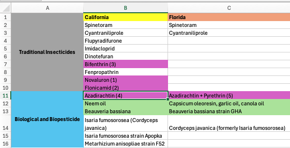

library(knitr)
library(kableExtra)
library(tidyverse)
library(stringr)
library(ggplot2)
library(rstanarm)
library(tidyr)
library(readr)
library(purrr)
library(dplyr)Homework-5
Setup
Read the data and take a first look
strawberry <- read_csv("strawberry_10oct25.csv", col_names = TRUE)
cat("There are 2,710 rows and 21 columns", "\n")There are 2,710 rows and 21 columns Examine the data. How is it organized?
## Is every line associated with a state?
state_all <- strawberry |> distinct(State)
state_all1 <- strawberry |> group_by(State) |> count()
## every row is associated with a state
if(sum(state_all1$n) == dim(strawberry)[1]){print("Yes every row in the data is associated with a state.")}[1] "Yes every row in the data is associated with a state."## rm(state_all, state_all1)Remove columns with a single value in all rows
# Define a function to drop columns with only one unique value
drop_one_value_col <- function(df) {
df |> select(where(~ n_distinct(.) > 1))
}
# Apply the function to your dataset
strawberry_removed <- drop_one_value_col(strawberry)
write.csv(strawberry_removed, "strawberry_removed.csv", row.names = FALSE)
# Check remaining columns
cat("Remaining columns:", ncol(strawberry), "\n")Remaining columns: 21 strawberry_removed <- drop_one_value_col(strawberry)
# 1) clean "STRAWBERRIES ..." prefix
strawberry_removed <- strawberry_removed %>%
mutate(
`Data Item` = str_remove(
`Data Item`,
regex("^\\s*STRAWBERRIES\\s*[-–,]*\\s*", ignore_case = TRUE)
),
`Data Item` = str_squish(`Data Item`)
)
# 2) how many comma-separated pieces exist (we will keep the first in Data Item, others become labels)?
n_labels <- strawberry_removed %>%
transmute(n_commas = str_count(`Data Item`, ",")) %>%
pull(n_commas) %>%
max(na.rm = TRUE)
# if there are no commas anywhere, still save and exit cleanly
if (is.finite(n_labels) && n_labels > 0) {
label_names <- paste0("Data label ", seq_len(n_labels))
# 3) split ONLY on commas; first piece overwrites Data Item, rest go to label columns
strawberry_removed <- strawberry_removed %>%
separate(
col = `Data Item`,
into = c("Data Item", label_names),
sep = "\\s*,\\s*",
fill = "right",
extra = "merge",
remove = TRUE
) %>%
mutate(
across(c("Data Item", all_of(label_names)),
~ ifelse(is.na(.x), NA_character_, str_squish(.x)))
)
}
# 4) save + quick check
write.csv(strawberry_removed, "strawberry_removed.csv", row.names = FALSE)
cat("Remaining columns:", ncol(strawberry_removed), "\n")Remaining columns: 11 if (exists("label_names")) cat("New label columns:", paste(label_names, collapse = ", "), "\n")New label columns: Data label 1, Data label 2 Split Census and Survey
norm_prog <- function(x) str_trim(str_to_lower(x))
# 1) Split into two datasets
strawberry_census <- strawberry_removed %>%
filter(norm_prog(Program) == "census")
strawberry_survey <- strawberry_removed %>%
filter(norm_prog(Program) == "survey")
# 2) Sanity checks
cat("Total rows in cleaned data: ", nrow(strawberry_removed), "\n")Total rows in cleaned data: 2710 cat("Rows in CENSUS: ", nrow(strawberry_census), "\n")Rows in CENSUS: 168 cat("Rows in SURVEY: ", nrow(strawberry_survey), "\n")Rows in SURVEY: 2542 # If there are unexpected/other values in Program, list them:
other_programs <- strawberry_removed %>%
filter(!norm_prog(Program) %in% c("census", "survey") | is.na(Program)) %>%
distinct(Program)
if (nrow(other_programs) > 0) {
cat("Found other Program values (not 'Census'/'Survey'):\n")
print(other_programs)
}
# 3) Save to disk
write.csv(strawberry_census, "strawberry_census.csv", row.names = FALSE)
write.csv(strawberry_survey, "strawberry_survey.csv", row.names = FALSE)Examine the relationship between Year-State-Variable “Acres Bearing”-Value-CV% in Census
df_ST <- read.csv("strawberry_census.csv")
y2022 <- df_ST %>%
filter(Year == 2022, Data.Item == "ACRES BEARING") %>%
mutate(Value_num = parse_number(Value)) %>%
filter(!is.na(Value_num))
# Summarize total (or mean) value by state
state_summary2022 <- y2022 %>%
group_by(State) %>%
summarize(total_acres = sum(Value_num, na.rm = TRUE)) %>%
arrange(desc(total_acres))
# Create barplot
ggplot(state_summary2022, aes(x = reorder(State, total_acres), y = total_acres, fill = State)) +
geom_col() +
coord_flip() + # horizontal bars (optional)
labs(title = "Value by Bearing Acres by State (2022)",
x = "State",
y = "Value") +
theme_minimal() +
theme(legend.position = "none")
#Year 2017 vs Acres Bearing
y2017 <- df_ST %>%
filter(Year == 2017, Data.Item == "ACRES BEARING") %>%
mutate(Value_num = parse_number(Value)) %>%
filter(!is.na(Value_num))
# Summarize total (or mean) value by state
state_summary2017 <- y2017 %>%
group_by(State) %>%
summarize(total_acres = sum(Value_num, na.rm = TRUE)) %>%
arrange(desc(total_acres))
# Create barplot
ggplot(state_summary2017, aes(x = reorder(State, total_acres), y = total_acres, fill = State)) +
geom_col() +
coord_flip() + # horizontal bars (optional)
labs(title = "Value by Bearing Acres by State (2017)",
x = "State",
y = "Value") +
theme_minimal() +
theme(legend.position = "none")
Examine the relationship between Year-State-Variable “Yield”-Value-CV% in Survey
df_st <- read.csv("strawberry_survey.csv")
#Year 2024
ySUR_2024 <- df_st %>%
filter(Year == 2024, Data.Item == "YIELD") %>%
mutate(Value_num = parse_number(Value)) %>%
filter(!is.na(Value_num))
# Summarize total (or mean) value by state
state_summary_sur_2024 <- ySUR_2024 %>%
group_by(State) %>%
summarize(total_acres = sum(Value_num, na.rm = TRUE)) %>%
arrange(desc(total_acres))
# Create barplot
ggplot(state_summary_sur_2024, aes(x = reorder(State, total_acres), y = total_acres, fill = State)) +
geom_col() +
coord_flip() + # horizontal bars (optional)
labs(title = "Value by Yield by State (2024)",
x = "State",
y = "Value") +
theme_minimal() +
theme(legend.position = "none")
#Year 2023
ySUR_2023 <- df_st %>%
filter(Year == 2023, Data.Item == "YIELD") %>%
mutate(Value_num = parse_number(Value)) %>%
filter(!is.na(Value_num))
# Summarize total (or mean) value by state
state_summary_sur_2023 <- ySUR_2023 %>%
group_by(State) %>%
summarize(total_acres = sum(Value_num, na.rm = TRUE)) %>%
arrange(desc(total_acres))
# Create barplot
ggplot(state_summary_sur_2023, aes(x = reorder(State, total_acres), y = total_acres, fill = State)) +
geom_col() +
coord_flip() + # horizontal bars (optional)
labs(title = "Value by Yield by State (2023)",
x = "State",
y = "Value") +
theme_minimal() +
theme(legend.position = "none")
#Year 2022
ySUR_2022 <- df_st %>%
filter(Year == 2022, Data.Item == "YIELD") %>%
mutate(Value_num = parse_number(Value)) %>%
filter(!is.na(Value_num))
# Summarize total (or mean) value by state
state_summary_sur_2022 <- ySUR_2022 %>%
group_by(State) %>%
summarize(total_acres = sum(Value_num, na.rm = TRUE)) %>%
arrange(desc(total_acres))
# Create barplot
ggplot(state_summary_sur_2022, aes(x = reorder(State, total_acres), y = total_acres, fill = State)) +
geom_col() +
coord_flip() + # horizontal bars (optional)
labs(title = "Value by Yield by State (2022)",
x = "State",
y = "Value") +
theme_minimal() +
theme(legend.position = "none")
#Year 2018
ySUR_2018 <- df_st %>%
filter(Year == 2018, Data.Item == "YIELD") %>%
mutate(Value_num = parse_number(Value)) %>%
filter(!is.na(Value_num))
# Summarize total (or mean) value by state
state_summary_sur_2018 <- ySUR_2018 %>%
group_by(State) %>%
summarize(total_acres = sum(Value_num, na.rm = TRUE)) %>%
arrange(desc(total_acres))
# Create barplot
ggplot(state_summary_sur_2018, aes(x = reorder(State, total_acres), y = total_acres, fill = State)) +
geom_col() +
coord_flip() + # horizontal bars (optional)
labs(title = "Value by Yield by State (2018)",
x = "State",
y = "Value") +
theme_minimal() +
theme(legend.position = "none")
#Year 2017
ySUR_2017 <- df_st %>%
filter(Year == 2017, Data.Item == "YIELD") %>%
mutate(Value_num = parse_number(Value)) %>%
filter(!is.na(Value_num))
# Summarize total (or mean) value by state
state_summary_sur_2017 <- ySUR_2017 %>%
group_by(State) %>%
summarize(total_acres = sum(Value_num, na.rm = TRUE)) %>%
arrange(desc(total_acres))
# Create barplot
ggplot(state_summary_sur_2017, aes(x = reorder(State, total_acres), y = total_acres, fill = State)) +
geom_col() +
coord_flip() + # horizontal bars (optional)
labs(title = "Value by Yield by State (2017)",
x = "State",
y = "Value") +
theme_minimal() +
theme(legend.position = "none")
Quick read pesticide file (raw data collected from other sources)
df_ins <- read.csv("raw-data.csv")
#Remove unnecessary columns, split domain column to simplify dataset
ins_removed <- df_ins |> select(-(6:12)) |> mutate(Domain = str_trim(str_split_fixed(Domain, ",", 2)[,2]))Group all insecticides in one dataset (raw data to technically correct data)
# 1) Filter to INSECTICIDE rows and drop (NA)/(D) in the Value column
#library(dplyr)
insect_dat <- ins_removed %>%
filter(Domain == "INSECTICIDE") %>%
filter(!grepl("\\(NA\\)|\\(D\\)",
`STRAWBERRIES..BEARING...APPLICATIONS..MEASURED.IN.LB......b.VALUE..b.`)) %>%
# keep only text after the colon
mutate(Domain.Category = trimws(sub("^[^:]+:\\s*", "", Domain.Category))) %>%
# drop unwanted columns
select(-c(4, 7, 8, 13, 15, 17, 19, 21))Insecticides used by California and Florida

References:
- https://www.nass.usda.gov/Statistics_by_State/California/Publications/Crop_Releases/Noncitrus_Fruits_and_Nuts/2024/CA_Noncitrus_2024.pdf
- https://pmc.ncbi.nlm.nih.gov/articles/PMC9147324/
- https://pmc.ncbi.nlm.nih.gov/articles/PMC11682952/
- https://quickstats.nass.usda.gov/results/84BB2177-5CF7-3AC3-8DBE-2C6F9D62B5EB#FA887518-6961-3384-936D-2A58A843E8D7
Explanation:
cat("Based on the research I conducted using the references below, California applied traditional insecticides
(shown in the photo above) to protect strawberries from pests. However, only Bifenthrin, Novaluron, Flonicamid,
and bioinsecticides such as Azadirachtin and Pyrethrin had measurable values in pounds, which allowed me to
generate the plot. The same pattern was observed in Florida. The chemicals highlighted in purple represent those
with available numeric values for analysis (i.e., not NAs).")Based on the research I conducted using the references below, California applied traditional insecticides
(shown in the photo above) to protect strawberries from pests. However, only Bifenthrin, Novaluron, Flonicamid,
and bioinsecticides such as Azadirachtin and Pyrethrin had measurable values in pounds, which allowed me to
generate the plot. The same pattern was observed in Florida. The chemicals highlighted in purple represent those
with available numeric values for analysis (i.e., not NAs).Visualization the relationship between insecticides and lbs of strawberries (technically correct data to consistent data)
# --- your prep (kept) ---
df_plot <- insect_dat %>%
rename(
Chemical = Domain.Category,
Pounds = `STRAWBERRIES..BEARING...APPLICATIONS..MEASURED.IN.LB......b.VALUE..b.`
) %>%
filter(Chemical != "(TOTAL)") %>%
mutate(Pounds = as.numeric(gsub(",", "", Pounds)))
# --- 1) Define two highlight groups ---
red_targets <- c("BIFENTHRIN", "NOVALURON", "FLONICAMID")
purple_targets <- c("AZADIRACHTIN", "PYRETHRINS")
df_plot <- df_plot %>%
mutate(
chem_name = toupper(str_extract(Chemical, "[A-Za-z]+")),
highlight_color = case_when(
chem_name %in% red_targets ~ "red",
chem_name %in% purple_targets ~ "purple",
TRUE ~ NA_character_
),
Chemical_f = reorder(Chemical, Pounds)
)
# --- 2) Base plot ---
p <- ggplot(df_plot, aes(x = Chemical_f, y = Pounds)) +
geom_col(fill = "steelblue") +
# --- red circles ---
geom_point(
data = subset(df_plot, highlight_color == "red"),
aes(x = Chemical_f, y = Pounds),
shape = 21, size = 7, stroke = 1.6, colour = "red", fill = NA
) +
# --- purple circles ---
geom_point(
data = subset(df_plot, highlight_color == "purple"),
aes(x = Chemical_f, y = Pounds),
shape = 21, size = 7, stroke = 1.6, colour = "purple", fill = NA
) +
coord_flip() +
labs(
title = "Strawberry Insecticide Application (lbs)",
x = "Chemical (Active Ingredient)",
y = "Pounds"
) +
theme_minimal() +
theme(
legend.position = "none",
plot.title = element_text(face = "bold", size = 14),
axis.text.y = element_text(size = 10)
)
p
Interpretation:
cat("The chemicals circled in red represent traditional insecticides, while those circled in purple
represent bioinsecticides (organic). From the chart, we can see that traditional chemical insecticides
are associated with higher strawberry yields (in pounds), whereas organic insecticides result in lower yields.
The photo above shows that California uses both the red (traditional) and purple (organic) insecticides,
while Florida uses only the purple ones. This may explain why California achieves higher strawberry yields
than Florida, as reflected in the patterns observed across all the charts above.")The chemicals circled in red represent traditional insecticides, while those circled in purple
represent bioinsecticides (organic). From the chart, we can see that traditional chemical insecticides
are associated with higher strawberry yields (in pounds), whereas organic insecticides result in lower yields.
The photo above shows that California uses both the red (traditional) and purple (organic) insecticides,
while Florida uses only the purple ones. This may explain why California achieves higher strawberry yields
than Florida, as reflected in the patterns observed across all the charts above.